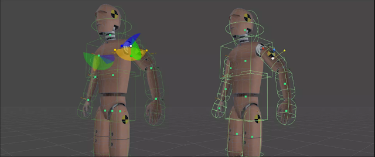

PROJECT 001 UNITY TOOLKITPhysicanim
2022 — ongoingAn active-ragdoll toolkit for Unity that turns humanoid animations into responsive, physics-driven characters. Build the rig, set up its joints and give a character room to stumble, recover and move with weight.
Project notes
The editor builder creates a character's ragdoll setup in one step. Character behaviours support walking, running, jumping, falling and getting back up, with protective poses and a gradual return to animation control.
Read More...Get Physicanim for your Unity Game Engine.